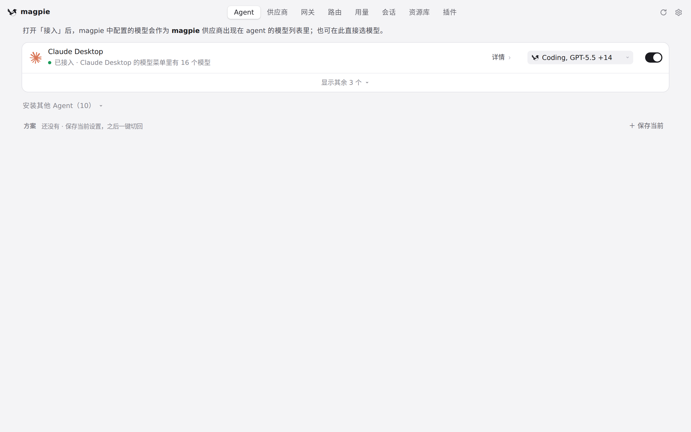

commit ab5bbbe · 回到 PR · 在 macOS 26 上，主窗口的圆角改成了普通标题栏窗口的样式（取下只用来内缩交通灯的工具栏），同时把交通灯位置、页头高度、sheet 起点和「另一个应用在前台时首次点击拖动」都保持在原来工具栏时的样子；其他系统与其余界面不变。

 主窗口顶部：改动所依附的位置 · 页头右上角的操作区，页头本身就是标题栏所在的地方
主窗口顶部：改动所依附的位置 · 页头右上角的操作区，页头本身就是标题栏所在的地方